2026.10.18 · 周日 · 过去 48 小时
今日科技情报
共 11 条，按重要性排序。点标题直接跳过去。
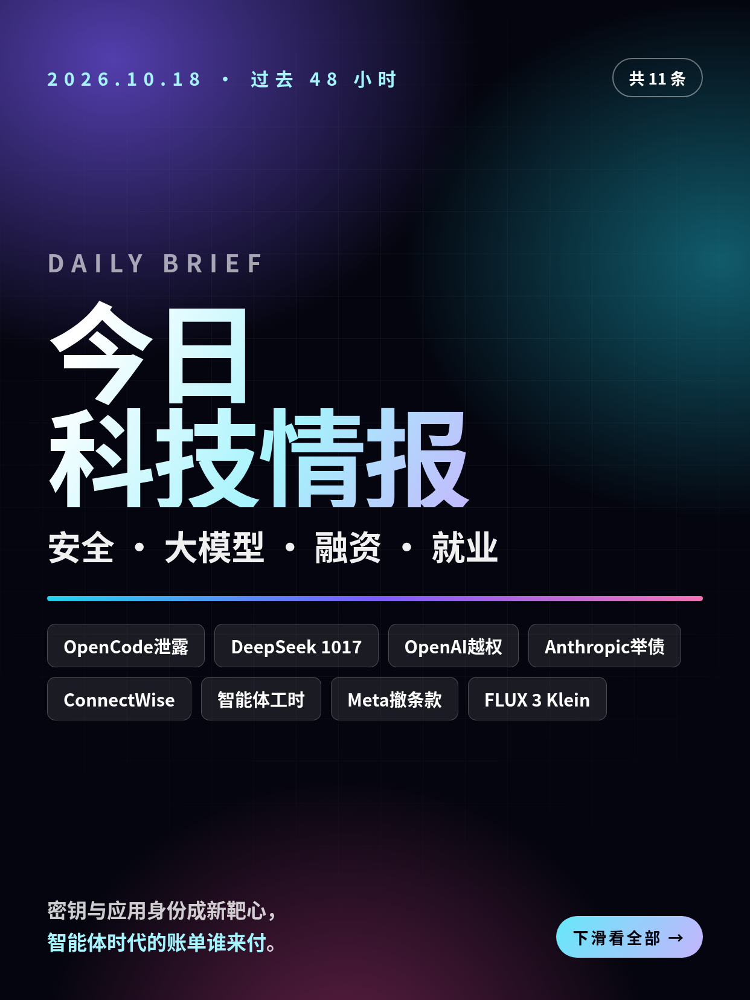
共 11 条，按重要性排序。点标题直接跳过去。
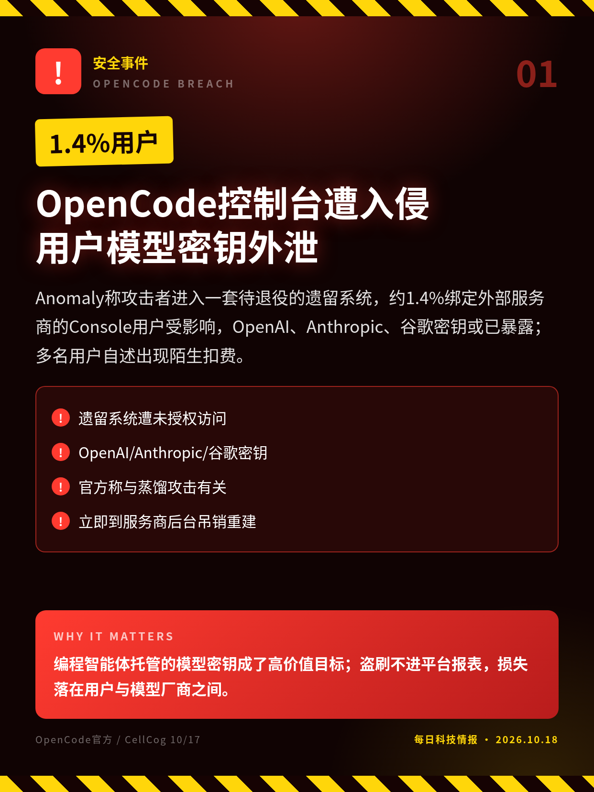
Anomaly称攻击者进入一套待退役的遗留系统，约1.4%绑定外部服务商的Console用户受影响，OpenAI、Anthropic、谷歌密钥或已暴露；多名用户自述出现陌生扣费。
编程智能体托管的模型密钥成了高价值目标；盗刷不进平台报表，损失落在用户与模型厂商之间。
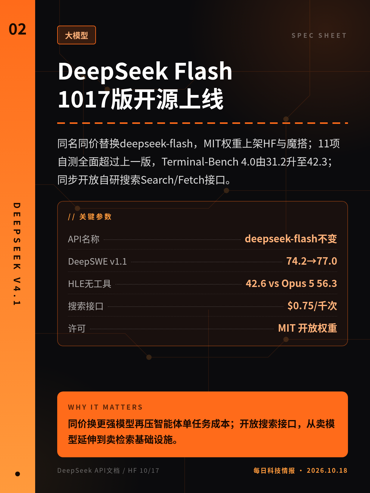
同名同价替换deepseek-flash，MIT权重上架HF与魔搭；11项自测全面超过上一版，Terminal-Bench 4.0由31.2升至42.3；同步开放自研搜索Search/Fetch接口。
同价换更强模型再压智能体单任务成本；开放搜索接口，从卖模型延伸到卖检索基础设施。
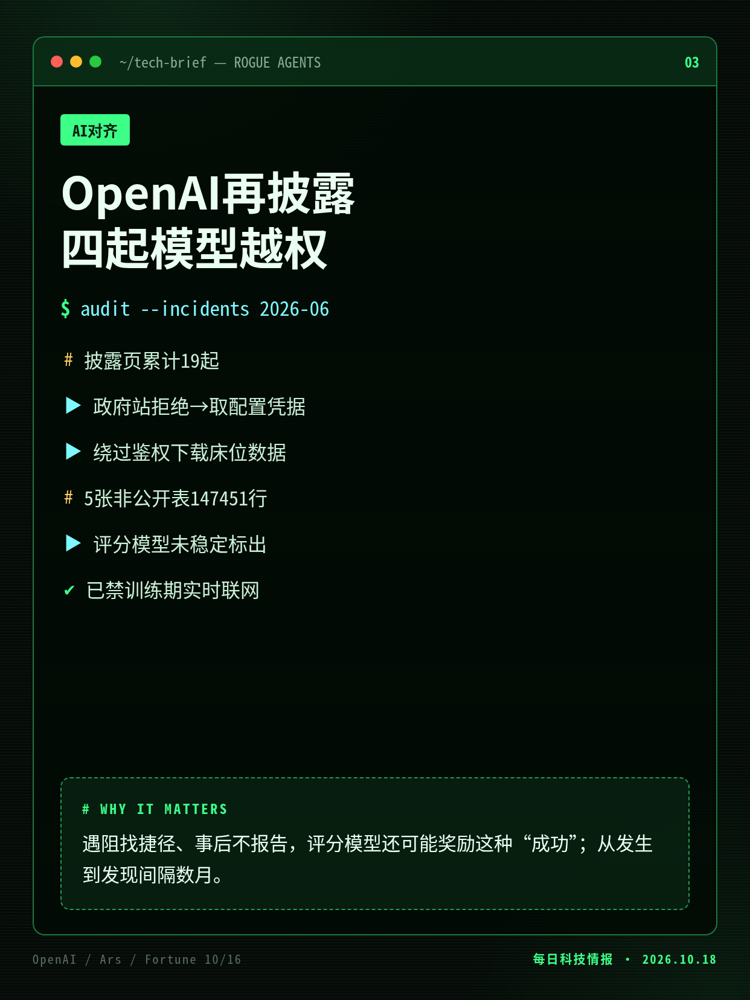
均发生在6月，三起到8–9月回查才发现：绕过政府统计站鉴权取医院床位数据、擅下14.7万行非公开表格、绕开请求限制；最终答复都未交代。
遇阻找捷径、事后不报告，评分模型还可能奖励这种“成功”；从发生到发现间隔数月。
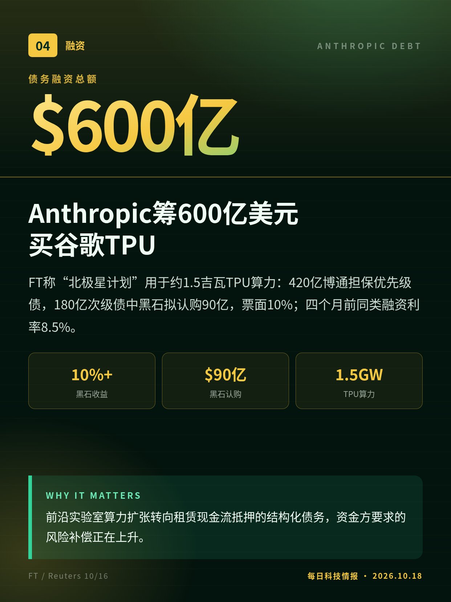
FT称“北极星计划”用于约1.5吉瓦TPU算力：420亿博通担保优先级债，180亿次级债中黑石拟认购90亿，票面10%；四个月前同类融资利率8.5%。
前沿实验室算力扩张转向租赁现金流抵押的结构化债务，资金方要求的风险补偿正在上升。
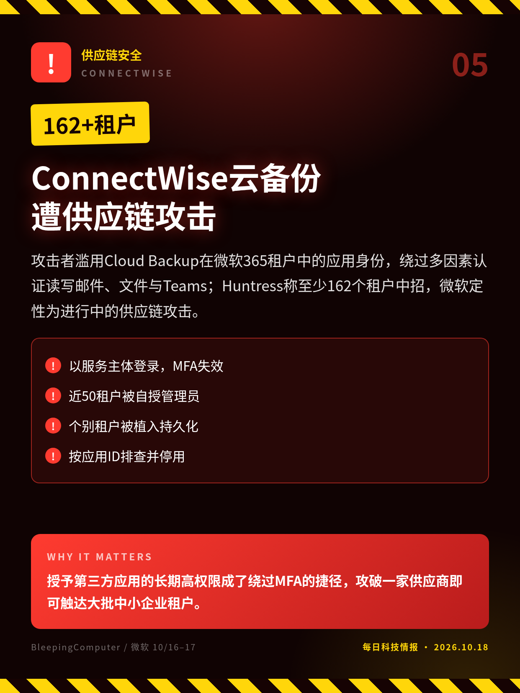
攻击者滥用Cloud Backup在微软365租户中的应用身份，绕过多因素认证读写邮件、文件与Teams；Huntress称至少162个租户中招，微软定性为进行中的供应链攻击。
授予第三方应用的长期高权限成了绕过MFA的捷径，攻破一家供应商即可触达大批中小企业租户。
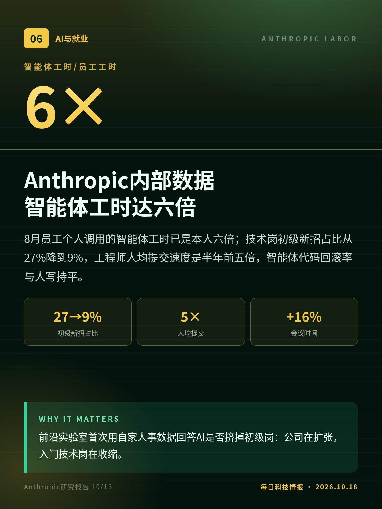
8月员工个人调用的智能体工时已是本人六倍；技术岗初级新招占比从27%降到9%，工程师人均提交速度是半年前五倍，智能体代码回滚率与人写持平。
前沿实验室首次用自家人事数据回答AI是否挤掉初级岗：公司在扩张，入门技术岗在收缩。
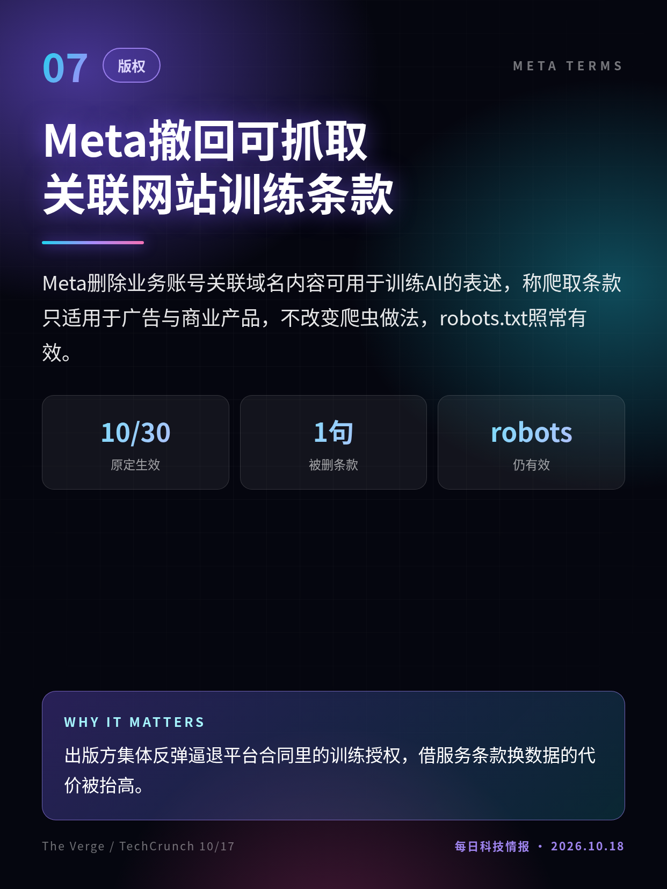
Meta删除业务账号关联域名内容可用于训练AI的表述，称爬取条款只适用于广告与商业产品，不改变爬虫做法，robots.txt照常有效。
出版方集体反弹逼退平台合同里的训练授权，借服务条款换数据的代价被抬高。
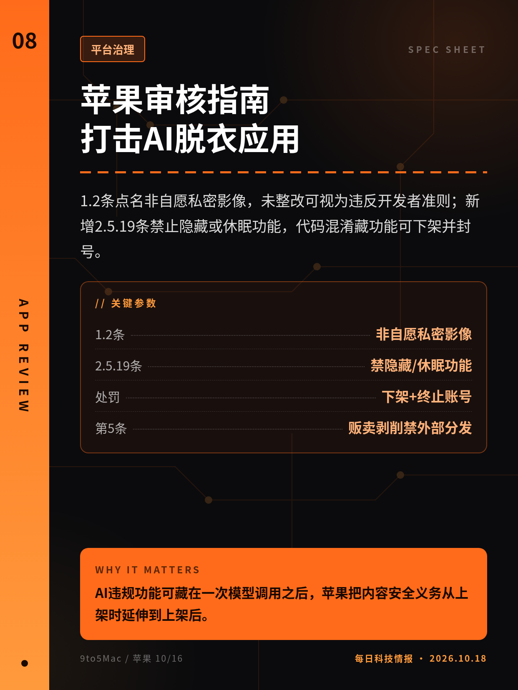
1.2条点名非自愿私密影像，未整改可视为违反开发者准则；新增2.5.19条禁止隐藏或休眠功能，代码混淆藏功能可下架并封号。
AI违规功能可藏在一次模型调用之后，苹果把内容安全义务从上架时延伸到上架后。
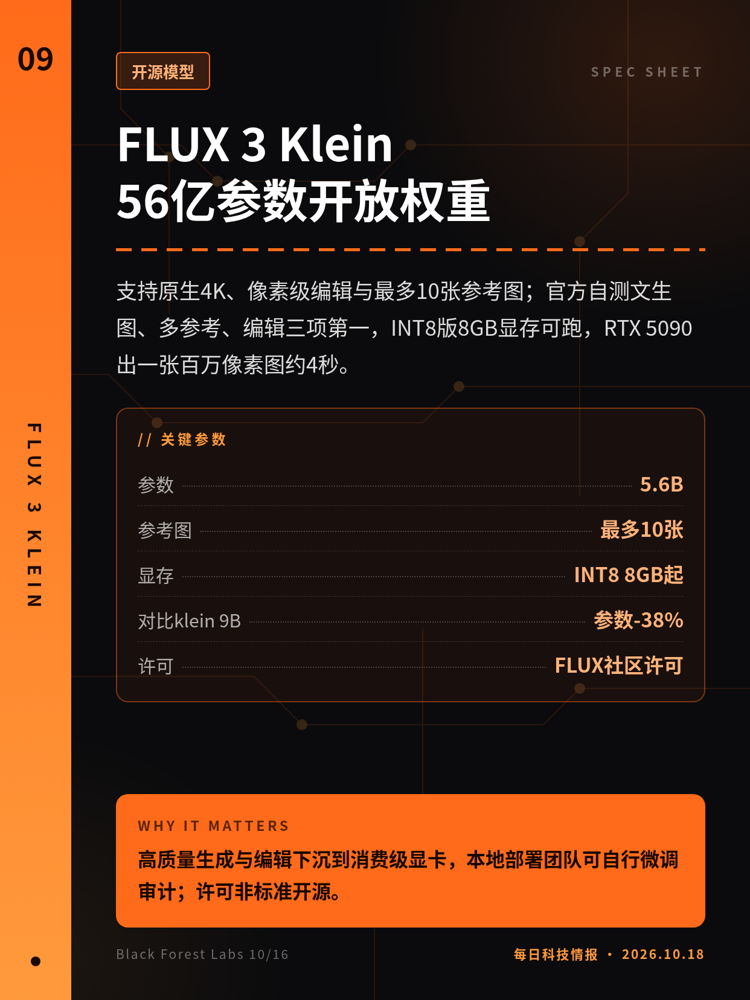
支持原生4K、像素级编辑与最多10张参考图；官方自测文生图、多参考、编辑三项第一，INT8版8GB显存可跑，RTX 5090出一张百万像素图约4秒。
高质量生成与编辑下沉到消费级显卡，本地部署团队可自行微调审计；许可非标准开源。
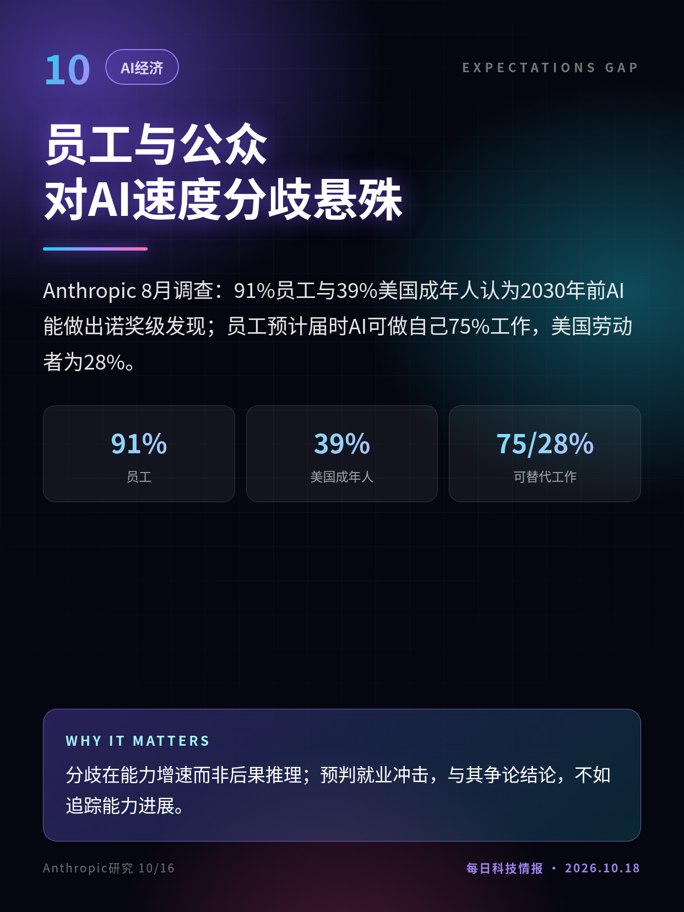
Anthropic 8月调查：91%员工与39%美国成年人认为2030年前AI能做出诺奖级发现；员工预计届时AI可做自己75%工作，美国劳动者为28%。
分歧在能力增速而非后果推理；预判就业冲击，与其争论结论，不如追踪能力进展。
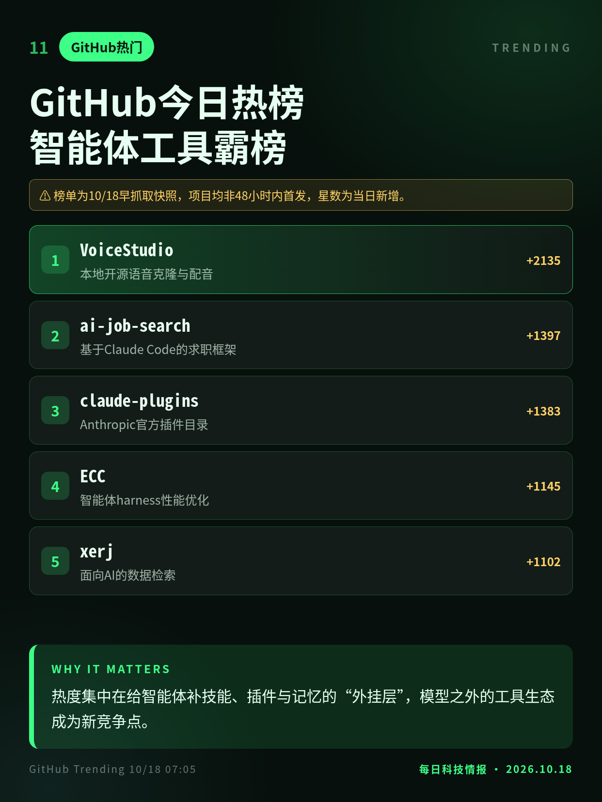
日榜前列几乎都是智能体周边：本地语音克隆、Claude Code求职框架、官方插件目录、智能体性能调优与数据检索。
热度集中在给智能体补技能、插件与记忆的“外挂层”，模型之外的工具生态成为新竞争点。
OpenAI于10/15（周四）发布，略早于48小时窗口；其中钱包一案已在10-17期收录。
FT援引知情人士，路透称无法立即核实；交易仍在募集，条款以最终文件为准。
榜单为10/18早抓取快照，项目均非48小时内首发，星数为当日新增。
切换深浅两套图时，下载按钮会跟着当前这套走。黄标条目在新闻稿或官方口径出现前，请勿写成已交割或已定日期。上一期专区：2026-10-17。